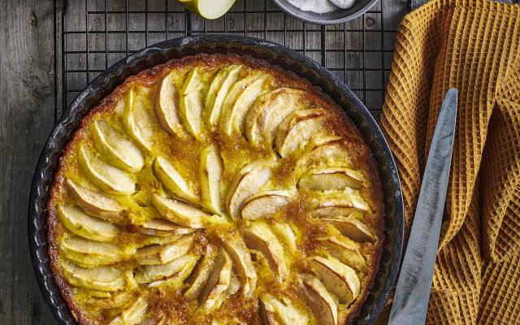

Navigatie
Hoofdpagina
Appeltaart

| Hoeveelheid |
Ingrediënt |
| 1 |
Middelgroot scharrelei |
| 1 |
Citroen |
| 400 gram |
Zelfrijzend bakmeel |
| 250 gram |
Witte basterdsuiker |
| 1 mespunt |
Zout |
| 250 gram |
Ongezouten roomboter |
| 8 |
Goudrenet-appels |
| 2 tl |
Kaneel |
| 150 gram |
Amandelspijs |
| 2 el |
Abrikozenjam |
- Splits het ei en rasp de gele schil van de citroen. Doe het bakmeel, 200 g suiker (per taart) en het zout in een kom. Snijd met 2 messen de boter erdoor totdat een kruimelig deeg ontstaat. Voeg het eiwit en citroenrasp toe. Kneed met koele handen snel tot een deegbal. Druk plat, verpak in vershoudfolie en leg 1 uur in de koelkast.
- Verwarm de oven voor op 175 °C. Vet de springvorm in. Bestuif het werkblad, de deegroller en de deegbal met bakmeel en rol ⅔ van het deeg uit tot een plak van 1 cm dik. Hiermee ga je de bodem en dan de randen van de vorm bekleden. Steek er eerst met de springvorm een cirkel uit en leg die op de bodem van de vorm. Bekleed de randen met het restant van het uitgerolde deeg.
- Schil de appels, snijd ze in kwarten en verwijder het klokhuis. Snijd de kwarten in stukjes en doe in een kom. Meng de kaneel en de rest van de suiker door de appel. Meng de helft van het eigeel door de amandelspijs en verdeel over de bodem. Schep de appels erop.
- Rol het achtergehouden deeg uit tot een vierkante lap. Snijd in repen van 2 cm breed en leg in een ruitpatroon op de vulling. Bestrijk met de rest van het eigeel. Bak de taart iets onder het midden van de oven in ca. 1 uur goudbruin en gaar.
- Bestrijk de bovenkant van de taart direct uit de oven met de jam. Laat afkoelen in de vorm.